Место
для людей
Будущий храм святых Кирилла и Мефодия станет духовным, культурным и просветительским центром на Пулковских высотах. Здесь будут совершаться богослужения, вестись занятия с детьми и взрослыми, оказываться помощь нуждающимся.
Узнать больше о храме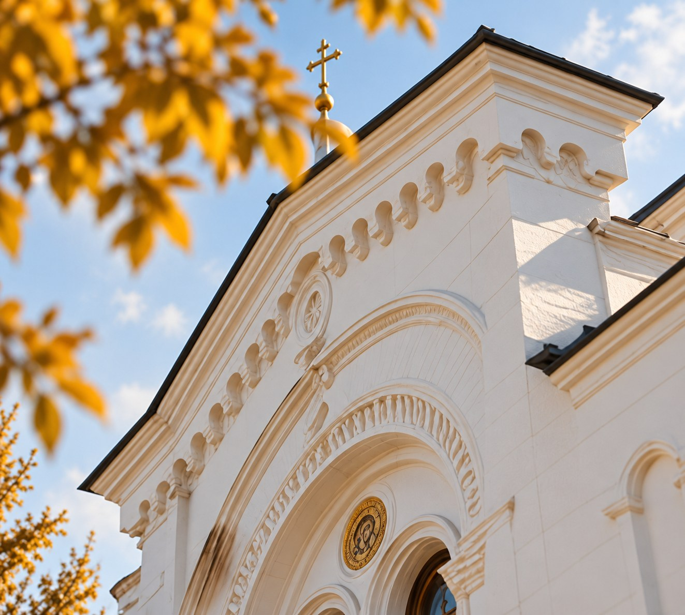
- 01
Молитва
Богослужения и таинства
- 02
Просвещение
Воскресная школа и встречи
- 03
Социальное служение
Помощь нуждающимся
- 04
Объединение
Сообщество прихожан
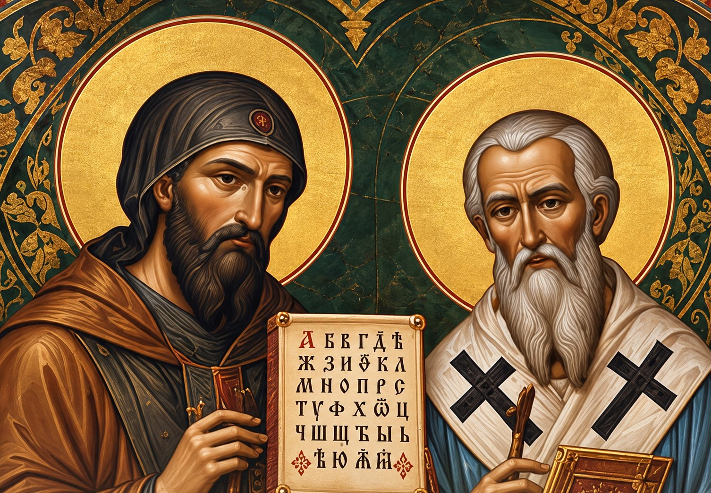
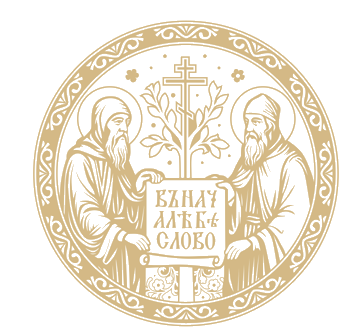
Наши небесные покровителиСвятые
Кирилл и Мефодий
Равноапостольные просветители славян, создатели славянской письменности, учители веры, культуры и единства народов.
Въ началѣ бѣ Слово
Узнать больше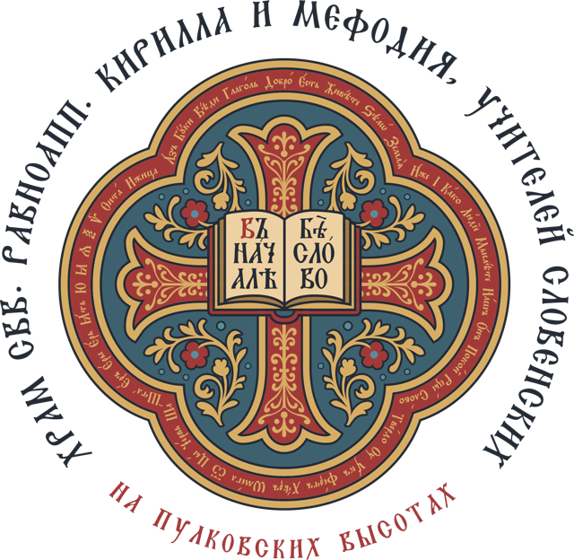
Девизы прихода
- Я человек Слова
- Я глаголю добро
- Я почитаю книги
Слова славянской азбуки, которую дали нам святые Кирилл и Мефодий: «аз», «глаголь», «добро», «слово». Девизы прихода — на открытках, записках и шоперах.
Пулковские
высоты
Место с особой историей и духовным значением. От рубежа обороны Ленинграда до символа мира и возрождения. Здесь, на этой земле, будет воздвигнут храм — как благодарность за жизнь, мир и будущее.
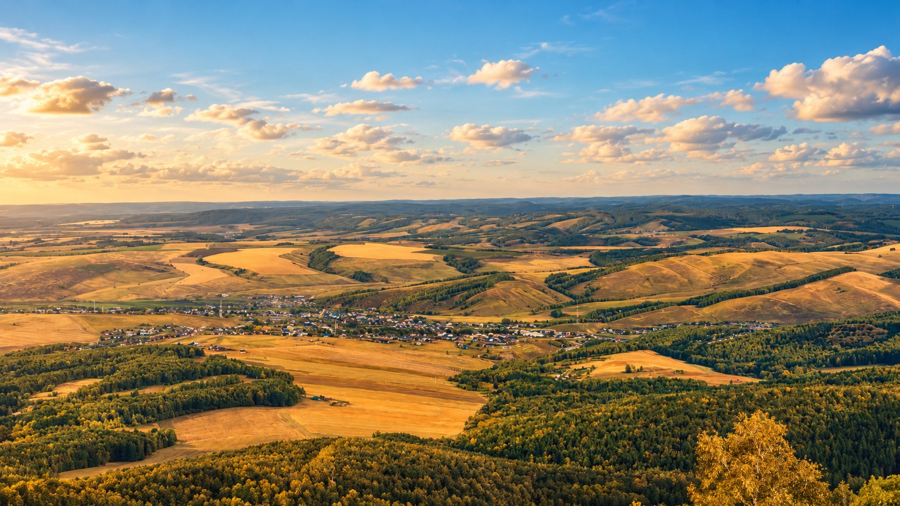
От креста к храму
- [дата]
Поклонный крест
На месте будущего храма установлен крест.
- [дата]
Первые молебны
У креста начала собираться община.
- [дата]
Проект часовни и храма
Готовы визуализации в византийской традиции.
- Впереди
Часовня
Первое место постоянной молитвы.
- Впереди
Храм
Храм святых Кирилла и Мефодия.
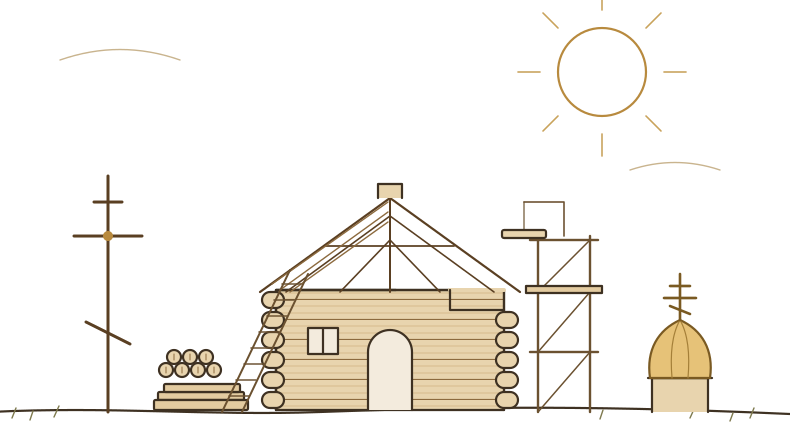
Строим
вместе
Первый этап — временная деревянная часовня у поклонного креста. В ней начнутся регулярные богослужения, пока строится каменный храм. Здесь можно следить за ходом работ и принять посильное участие.
Ход строительстваСобрано: уточняетсяЦель появится после утверждения сметы
Состав этапов, смета и статусы появятся после утверждения проекта. Отчёты будут по каждому этапу.
- IВременная часовня
- IIПроект храма
- IIIФундамент
- IVСтены и кровля
- VИнженерные сети
- VIОтделка
- VIIИконы и утварь
Живая
жизнь прихода
Молебны, праздники, встречи, волонтёрские проекты и строительные будни. Следите за жизнью прихода в фотографиях и видео.
Смотреть все события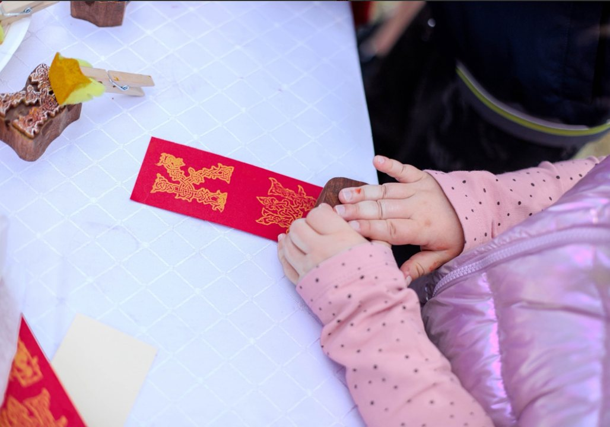
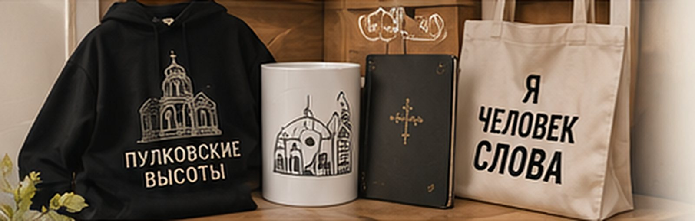
Больше,
чем вещи
Современный мерч со смыслом. Поддерживая приход, вы становитесь частью большого дела.
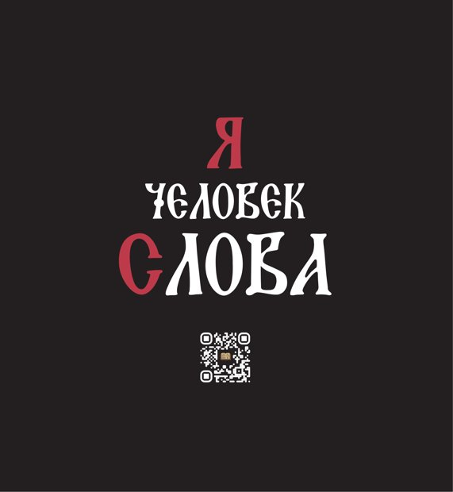
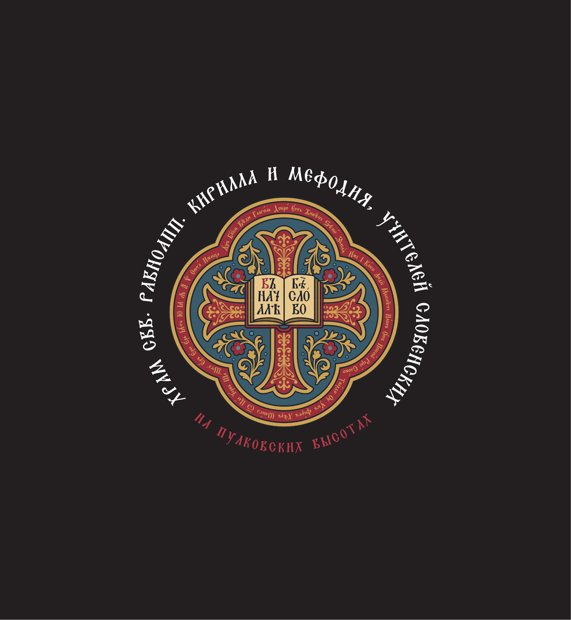
Молитва всегда рядом
Помолимся о вас и ваших близких на ближайшей Литургии. В одну записку — до 25 имён: полностью, в родительном падеже, в церковном написании («Иоанна», «Марии»). Детей до 7 лет пишут «младенца», до 15 — «отрока» или «отроковицы».
Попросить молитвы общиныСпросите священника
О крещении и венчании, исповеди и причастии, посте и церковной жизни. Ответ можно получить лично или разрешить опубликовать его для всех — без вашего имени.
Читать ответы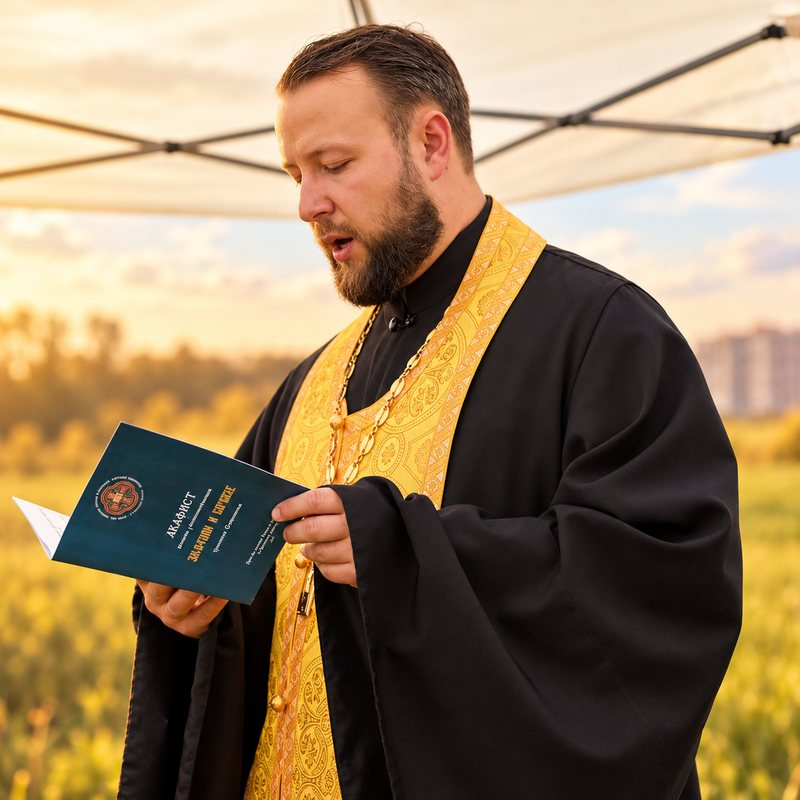
Строим не только деньгами
Храм поднимают руки, знания и время прихожан. Предложите свой труд, материалы, технику или профессиональную консультацию — координатор свяжется с вами.
- СтроительствоРаботы на участке
- ПроектированиеАрхитектура, расчёты, надзор
- ЭлектрикаМонтаж и консультации
- ОтоплениеСантехника и инженерия
- ОтделкаПокраска, роспись, дерево
- ТранспортДоставка и логистика
- МатериалыПередать материалы и технику
- Фото и видеоСнимать жизнь прихода